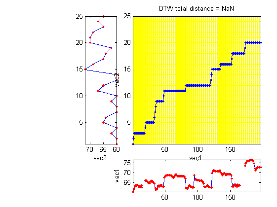

dtw3withRestM
Pure m-file implementation of DTW (dynamic time warping) with local paths of 0 and 45 degrees
Contents
Syntax
- minDist = dtw3m(vec1, vec2)
- minDist = dtw3m(vec1, vec2, opt)
- minDist = dtw3m(vec1, vec2, opt, showPlot)
- [minDist, dtwPath, dtwTable] = dtw3m(...)
Description
dtw3m(vec1, vec2, beginCorner, endCorner, showPlot, distanceBound) returns the DTW distance between vec1 and vec2, assuming a local path constrains of 0 and 45 degrees.
- vec1: testing vector
- vec2: reference vector
- beginCorner: 1 for anchored beginning
- endCorner: 1 for anchored ending
- showPlot: 1 for plotting the DTW path
- distanceBound: distance bound for stop the computation. (Stop the computation immediately if the accumulated DTW distance is larger than this distance bound.)
[minDist, dtwPath, dtwTable] = dtw3m(...) also return two extra results:
- dtwPath: optimal path of DTW (Its size is 2xk, where k is the path length.)
- dtwTable: DTW table
Note that this function is a pure m-file implementation which is slow but easy to customize.
Example
This example aligns a singing pitch to a note sequence
pv=[60.485736 61.330408 61.917323 62.836778 63.478049 63.807818 63.478049 63.807818 63.478049 62.836778 63.154445 62.836778 63.154445 63.478049 62.524836 nan nan nan nan 65.930351 65.930351 65.930351 65.558029 65.193545 64.836577 64.836577 64.836577 65.558029 65.558029 65.930351 65.558029 65.193545 64.836577 64.486821 62.218415 61.330408 61.621378 61.917323 62.836778 63.478049 63.478049 63.154445 63.478049 63.807818 63.807818 63.154445 63.154445 63.154445 67.505286 68.349958 68.349958 68.788268 68.788268 68.788268 68.788268 68.788268 68.788268 68.788268 68.788268 68.349958 68.349958 67.505286 67.505286 67.922471 68.788268 68.788268 69.237965 68.788268 68.349958 68.349958 68.349958 68.349958 68.349958 68.349958 68.349958 68.349958 68.349958 68.349958 67.922471 67.922471 67.097918 62.218415 62.218415 61.917323 62.218415 62.836778 63.478049 63.478049 63.154445 62.836778 63.154445 62.524836 62.836778 62.524836 68.788268 66.699915 66.699915 66.310858 66.310858 66.310858 66.310858 65.930351 65.930351 65.930351 65.930351 65.930351 65.558029 65.193545 64.486821 63.154445 62.836778 62.836778 63.154445 63.478049 63.478049 63.154445 62.836778 62.836778 62.524836 62.524836 62.524836 69.699654 70.661699 71.163541 71.163541 70.661699 70.661699 70.661699 70.661699 70.661699 70.661699 70.661699 70.661699 71.163541 70.173995 69.699654 69.237965 68.788268 69.237965 69.699654 69.699654 69.237965 68.788268 69.237965 69.237965 69.237965 69.237965 69.237965 69.237965 69.237965 68.788268 67.097918 63.154445 63.154445 63.478049 64.143991 64.143991 63.807818 63.154445 64.143991 63.154445 63.478049 63.807818 63.478049 nan nan nan nan nan nan nan 73.330408 74.524836 75.154445 75.807818 75.807818 75.807818 75.807818 75.807818 76.486821 76.486821 76.486821 76.486821 75.807818 75.807818 74.524836 72.213095 71.163541 71.680365 72.213095 72.762739 72.762739 72.762739 72.762739 72.762739 72.762739]; note=[60 29 60 10 62 38 60 38 65 38 64 77 60 29 60 10 62 38 60 38 67 38 65 77 60 29 60 10 72 38 69 38 65 38 64 38 62 77 0 77 70 29 70 10 69 38 65 38 67 38 65 38]; notePitch=note(1:2:end); % Get pitch only notePitch(notePitch==0)=[]; % Get rid of rests opt=dtw3withRestM('defaultOpt'); opt.endCorner=0; [minDist, dtwPath] = dtw3withRestM(pv, notePitch, opt); dtwPathPlot(pv, notePitch, dtwPath, 'square');
See Also
dtwPathPlot, dtwBridgePlot, dtw1, dtw2, dtw3.